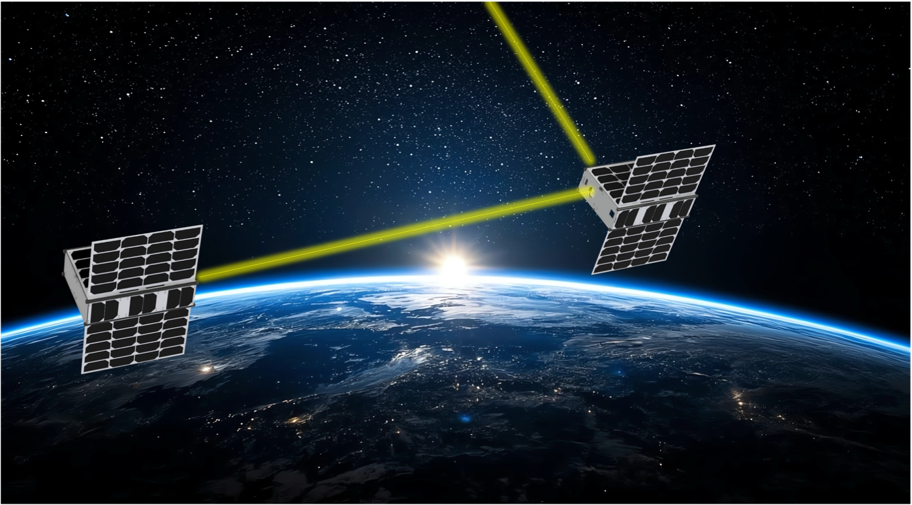
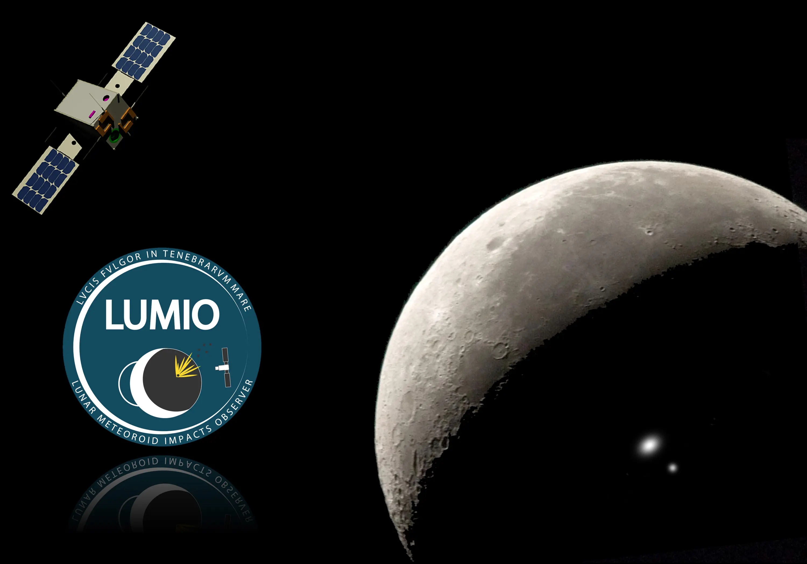
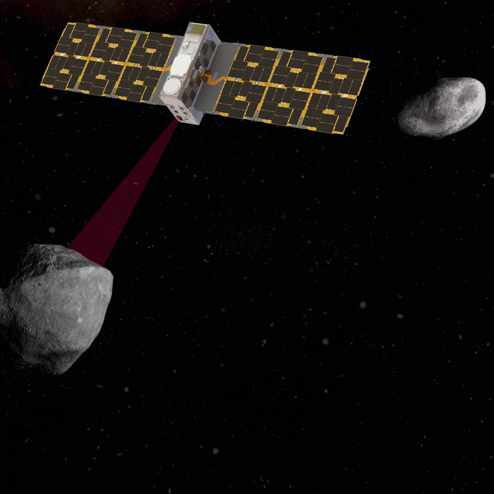

Spacecraft Guidance Navigation and Control (GNC) Engineer. Expert in modeling, simulation and testing of dynamical Space Systems, spacecraft autonomy, precise formation flying and astrodynamics. Seven years of experience in research on autonomous space robotics probes, with leading GNC roles for both Low Earth Orbit (LEO) and deep-space missions sponsored by national and international agencies across Europe and the US. Currently focused at Stanford on enabling and flight testing ground breaking GNC technologies for distributed space systems that can be pivotal in the current landscape of Space exploration and exploitation. GNC Engineer for the Milani, LUMIO, and STARI missions.


